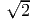
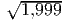
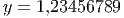
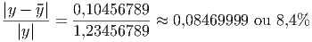
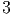
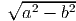
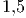
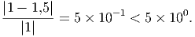

Nesta seção, vamos utilizaremos a seguinte descrição abstrata para o conceito de “resolver um problema”: dado um conjunto de dados de entrada, encontrar os dados de saída. Se denotamos pela variável x os dados de entrada e pela variável y os dados de saída, resolver o problema significa encontrar y dado x. Em termos matemáticos, a resolução de um problema é realizada pelo mapeamento f : x → y, ou simplesmente
|
|
É certo que na maioria das aplicações, os dados de entrada do problema, isto é x, não é conhecido com total exatidão, devido a diversas fontes de erros como incertezas na coleta dos dados e erros de arredondamento. O conceito de condicionamento está relacionado com a forma como os erros nos dados de entrada influenciam os dados de saída.
Para fins de análise, denotaremos por x, os dados de entrada com precisão absoluta e por x*, os dados com erro. Definiremos também a solução y*, do problema com dados de entrada x*, ou seja


 |
Estamos interessados em saber se os erros cometidos na entrada Δx = x - x* influenciaram na saída do problema Δy = y - y*.
No caso mais simples, temos que x ∈ ℝ e y ∈ ℝ. Assumindo que f seja diferenciável, a partir da série de Taylor
 |
obtemos (subtraindo f(x) dos dois lados)
 |
Para relacionarmos os erros relativos, dividimos o lado esquerdo por y, o lado direito
por f(x) = y e obtemos


 |
sugerindo a definição de número de condicionamento de um problema.
Definição 2.6.1. Seja f uma função diferenciável. O número de condicionamento de um problema é definido como
 |
e fornece uma estimativa de quanto os erros relativos na entrada  serão
amplificados na saída
serão
amplificados na saída  .
.
De modo geral, quando f depende de várias variáveis, podemos obter


Uma matriz de números de condicionamento também poderia ser obtida como em [5].
Exemplo 2.6.1. Considere o problema de calcular  em x = 2. Se usarmos
x* = 1,999, quanto será o erro relativo na saída? O erro relativo na entrada
é
em x = 2. Se usarmos
x* = 1,999, quanto será o erro relativo na saída? O erro relativo na entrada
é
 |
O número de condicionamento do problema calcular a raiz é
 |
Ou seja, os erros na entrada serão diminuídos pela metade. De fato, usando y =  = 1,4142136... e y* =  = 1,41386..., obtemos
|
|
Exemplo 2.6.2. Considere a função f(x) =  e x* = 0,9995 com um erro
absoluto na entrada de 0,0001.
e x* = 0,9995 com um erro
absoluto na entrada de 0,0001.
Calculando y* = f(x*) temos
 |
Mas qual é a estimativa de erro nessa resposta? Quantos dígitos significativos temos nessa resposta?
Sabendo que f′(x) = -10∕(1 - x2)2, o número de condicionamento é
|
|
o que nos fornece para x* = 0,9995,
|
|
Como o erro relativo na entrada é
|


|
temos que o erro na saída será aproximadamente
|
|
ou seja um erro relativo de aproximadamente 19,99%.
Note que se usarmos x1 = 0,9994 e x2 = 0,9996 (ambos no intervalo do erro absoluto da entrada) encontramos
Exemplo 2.6.3. Seja f(x) = x exp(x). Calcule o erro absoluto em se calcular f(x) sabendo que x = 2 ± 0,05.
Solução. Temos que x ≈ 2 com erro absoluto de δx = 0,05. Neste caso, calculamos δf, i.e. o erro absoluto em se calcular f(x), por:
|
|
Como f′(x) = (1 + x)ex, temos:
Exemplo 2.6.4. Calcule o erro relativo ao medir f(x,y) =  e2y sabendo que
x ≈ 3 é conhecido com 10% de erro e y ≈ 2 é conhecido com 3% de erro.
e2y sabendo que
x ≈ 3 é conhecido com 10% de erro e y ≈ 2 é conhecido com 3% de erro.
Solução. Calculamos as derivadas parciais de f:
Exemplo 2.6.5. No exemplo anterior, reduza o erro relativo em x pela metade e calcule o erro relativo em f. Depois, repita o processo reduzindo o erro relativo em y pela metade.
Solução. Na primeira situação temos x = 3 com erro relativo de 5% e δx = 0,05 ⋅ 3 = 0,15. Calculamos δf = 7,886399450 e o erro relativo em f de 13%. Na segunda situação, temos y = 2 com erro de 1,5% e δy = 2 ⋅ 0,015 = 0,03. Calculamos δf = 4,853168892 e o erro relativo em f de 8%. Observe que mesma o erro relativo em x sendo maior, o erro em y é mais significante na função. ♢
Exemplo 2.6.6. Considere um triângulo retângulo onde a hipotenusa e um dos
catetos são conhecidos a menos de um erro: hipotenusa a = 3±0,01 metros e cateto
b = 2 ± 0,01 metros. Calcule o erro absoluto ao calcular a área dessa triângulo.


Solução. Primeiro vamos encontrar a expressão para a área em função da hipotenusa a e um cateto b. A tamanho de segundo cateto c é dado pelo teorema de Pitágoras, a2 = b2 + c2, ou seja, c = . Portanto a área é

E 2.6.1. Considere que a variável x ≈ 2 é conhecida com um erro relativo de 1% e a variável y ≈ 10 com um erro relativo de 10%. Calcule o erro relativo associado a z quando:
|
|
Suponha que você precise conhecer o valor de z com um erro de 0,5%. Você propõe uma melhoria na medição da variável x ou y? Explique.
E 2.6.2. A corrente I em ampères e a tensão V em volts em uma lâmpada se relacionam conforme a seguinte expressão:
|
|
onde α é um número entre 0 e 1 e V 0 é tensão nominal em volts. Sabendo que
V 0 = 220 ± 3% e α = -0,8 ± 4%, calcule a corrente e o erro relativo associado quando a
tensão vale 220 ± 1%.
Obs:. Este problema pode ser resolvido de duas formas distintas: usando a expressão
aproximada para a propagação de erro e inspecionando os valores máximos e mínimos
que a expressão pode assumir. Pratique os dois métodos.


E 2.6.3. A corrente I em ampères e a tensão V em volts em uma lâmpada se relacionam conforme a seguinte expressão: